Lecturer, Department of Computer Science and Engineering, IUBAT, Dhaka, Bangladesh (2024-Present)


I joined IUBAT as a lecturer in October 3, 2024. I have been teaching programming courses. Also, I have been serving a Mentor of the Software Hackathon and Robotics Wing of the Department of Computer Science and Engineering under the supervision of Prof. Dr. Utpal Kanti Das (Chairman of the Department).
IOT Sensors, Robotics and Programming Instructor, Best Tutors Online, London (2020-2021)
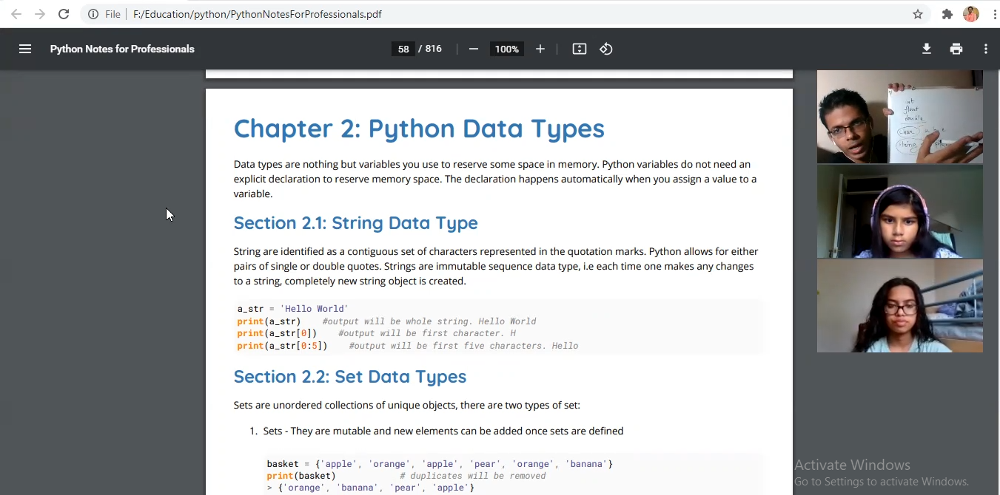
Best Tutors Online is a London based distant learning platform where I remotely conducted classes and delivered virtual practical training about Internet of Things, Smart Sensors, Robotics and Programming to the international students around the world (mostly in United Kingdom). I Instructed students to develop projects with Microcontrollers (Arduino UNO R3, ATMega2560, Nano) and Sensors, e.g., Environmental (DHT11-21, YL69), GY-BMI160 Gravitational, Flex, TTP223B Digital Touch, TCS230, TCS3200 Color, Optical, Barometric Pressure (BMP180), Sound (E30 module), Gas and Smoke (MQ2-9, MQ135) .
Chief Trainer, IUBAT CSE Robotics Club (2017-2020)
 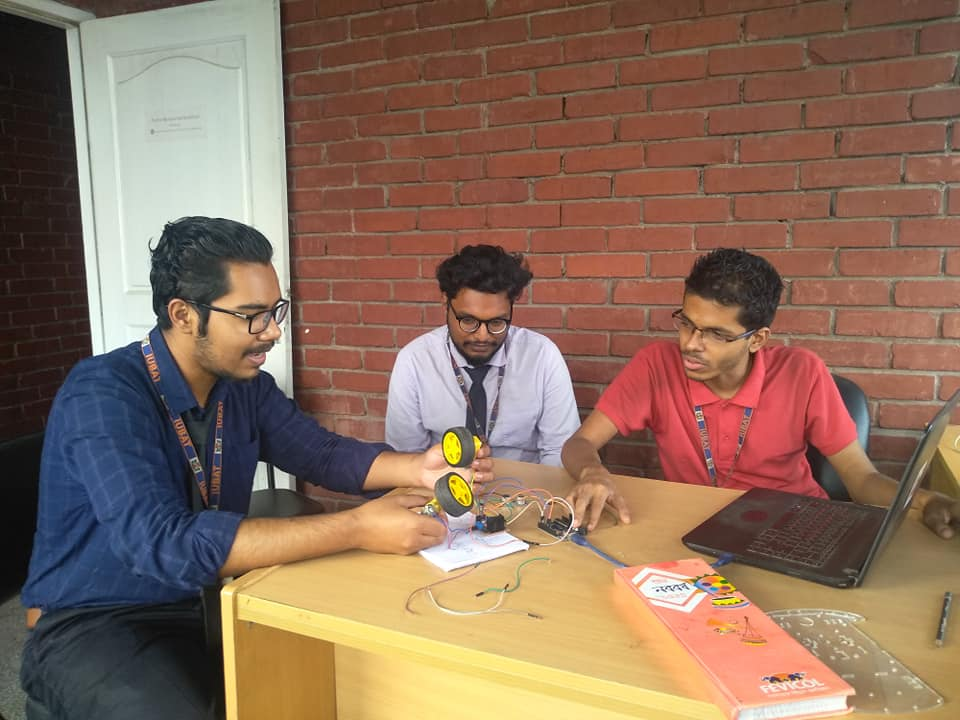
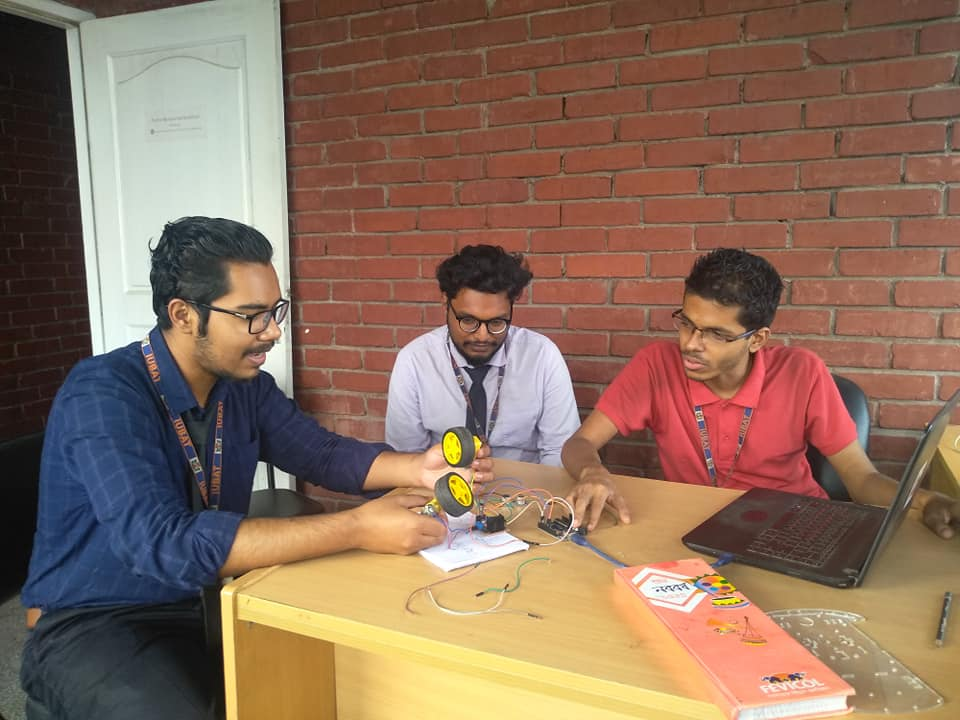


I established the IUBAT CSE the Robotics Club under the Department of Computer Science and Engineering in March 2017 along with five other senior undergraduate students. I launched lots of campaigns and organized 3 (three) Robotics Competitions to introduce the world of Robotics amongst the students and motivate them joining us.
• Directed the Robotics Training Programs every semesters which led us to create multiple strong teams for Robotics Championships and National Tech Project Competitions.
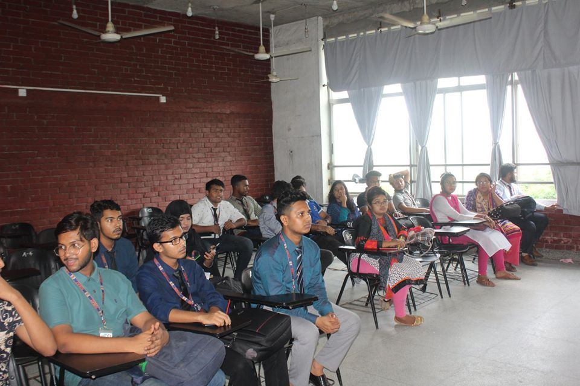

• Trained about a couple of hundred students on Robotics Systems, 40+ different types of Sensors (Environment, Biometric, Gesture, Gas, Liquid), Motors, Actuators, Arduino, Raspberry Pis and Programming (Python, Arduino, C++).
 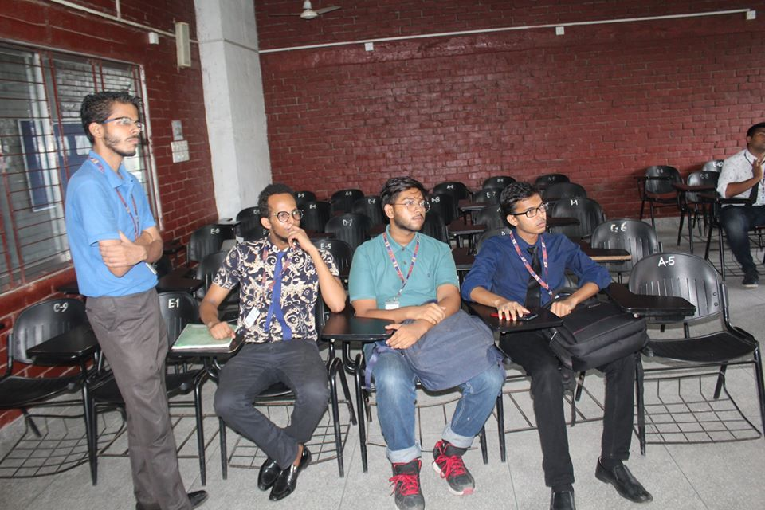
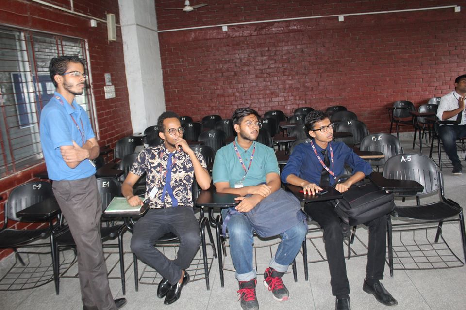
 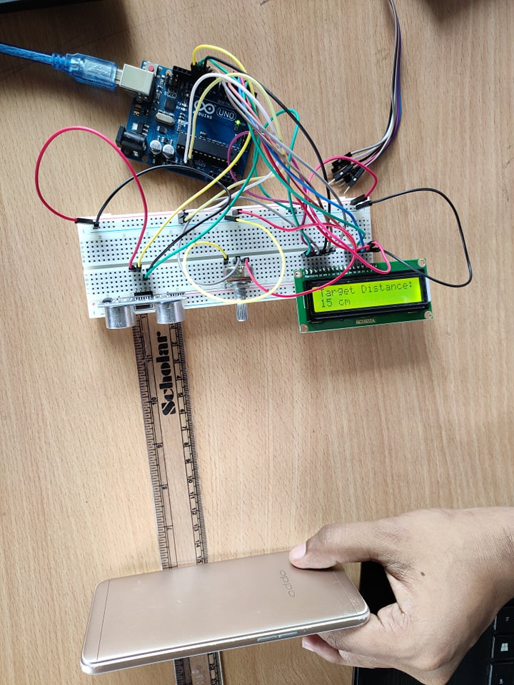
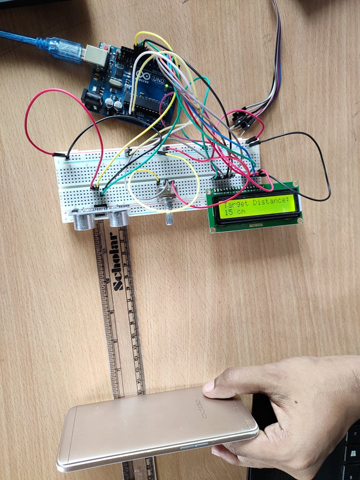
• Created and mentored teams which ended up winning 5 (five) National Technological Project Competitions in Bangladesh within 3 years upon its establishment.
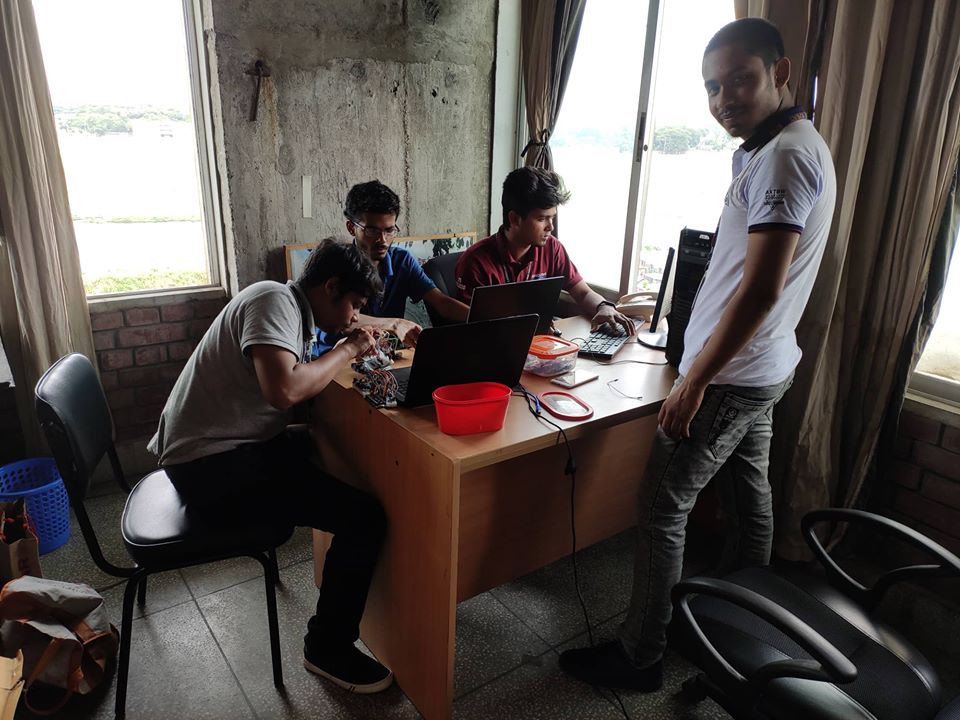

• Arranged 34 hours of Basic to Advanced Robotics Workshops in 14 days at a stretch. The trained juniors are now bearing the responsibility for the future execution and success.
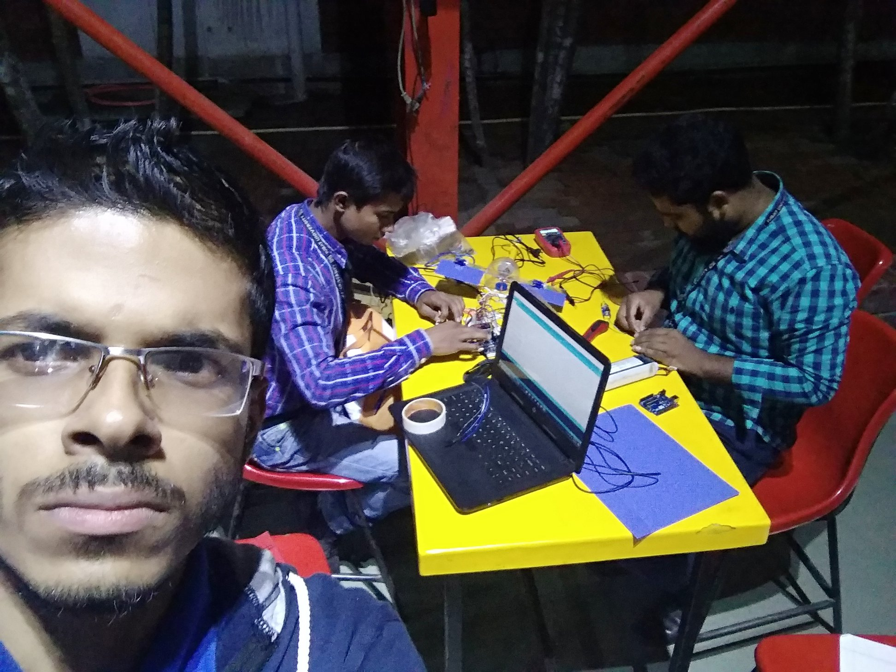 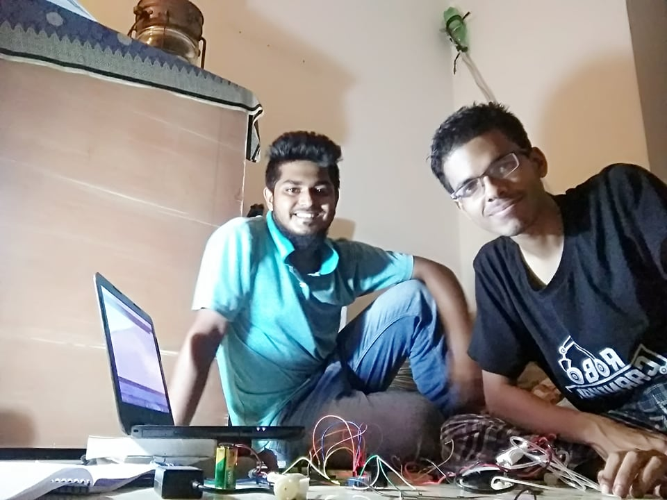 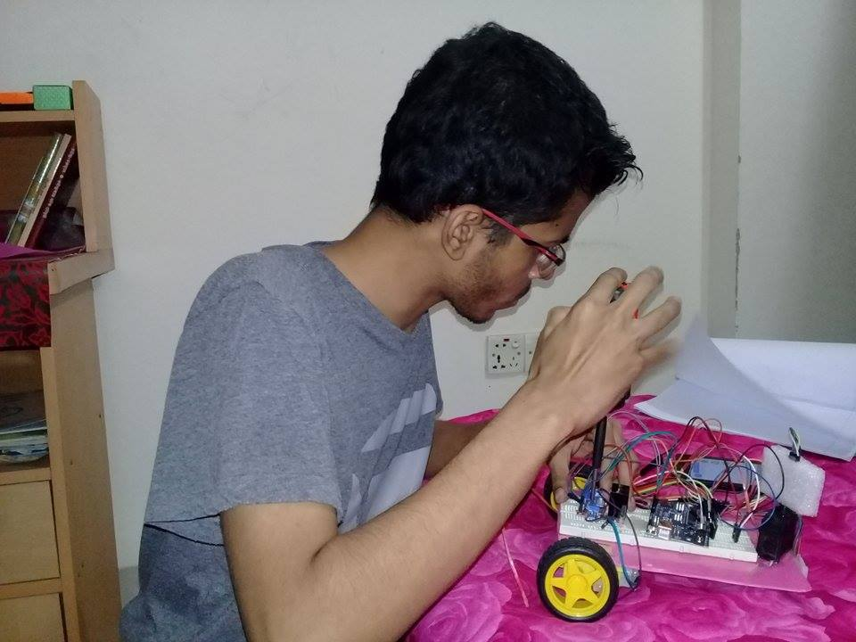 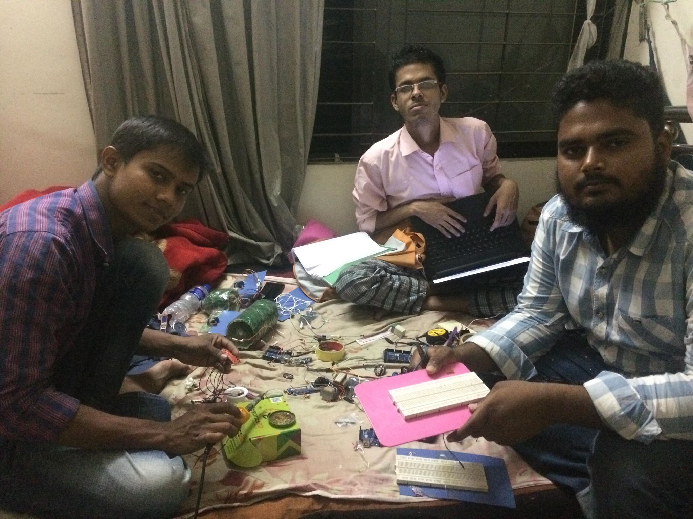
Teaching Assistant, Department of Computer Science and Engineering, IUBAT (2017-2020)

As a Teaching Assistant,
• Taught CSC397 Theory of Computation at Fall 2019. Focused mostly in planning and delivering interesting and enjoyable lectures for almost 45 to 50 students on Deterministic Finite Automata (DFA), NFA to DFA conversion, Push Down Automata and Turing Machine.
• Taught CSC391 Data Structures and Algorithms at Fall 2019. Nurtured almost 120 students on Asymptotic Notations, Graph theory and Algorithm, Geometric Algorithm, Sorting, Searching and different Data Structure techniques.
• Taught CSC283 Programming (C++) at Fall 2018. Delivered lectures to almost 32 students.
• Taught CSC183 Programming (C) at Fall 2017. Delivered lectures to 52 students.
• Taught CSC103 Fundamentals of Computers and Applications at Spring 2017. Delivered lectures to almost 45 students.